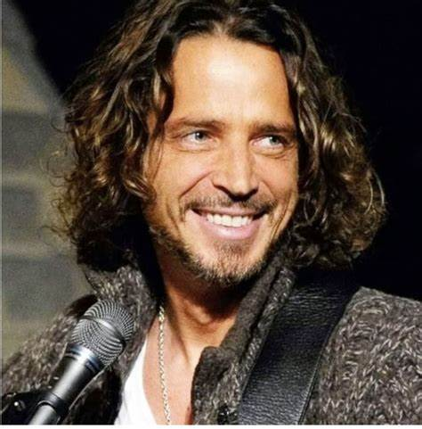

Siyabonga Zubane (1998-2022)
"Siyabonga Zubane took his own life on Saturday (7 May 2022). Siyabonga was popular for his role as Sdumo – a crook and carjacker on a TV show in South Africa called Gomora. The Gomora star was only 23 years old."
A family member had to say this:
"He was nothing close to Sdumo. He was a nice shy guy who loved and respected people.” The Gomora actor’s death added to the growing list of young South African stars lost to suicide, exposing the intense pressures of fame.
Ebenhaezer Dibakwane (1994–2025)
"The family of award-winning comedian, actor, and writer Ebenhaezer ‘Ebby’ Dibakwane has confirmed that he died by suicide on 7 March 2025 at the age of 31. His family hopes his passing serves as a reminder of the importance of mental health: “While this loss is devastating, we pray that it encourages people to check in on each other and prioritise their emotional well-being. Seeking professional help when needed is essential.”"
Ceagan Arendse (1989–2021)
"Actor Ceagan Arendse known for his portrayal of Woelag in the Afrikaans soap Arendsvlei, died on 14 February 2021. He was 34. The family in a statement confirmed to Channel24 that Ceagan died by suicide. 'It is with sad and heavy hearts we inform friends and fans that our beloved Ceagan Arendse passed away early hours of Sunday morning 14 February 2021. Ceagan unfortunately lost his battle with depression and succumbed to the disease through suicide,' said the statement."
Avicii (1989-2018)
"Bergling died on 20 April 2018 in Muscat, Oman, where he was on holiday, at the age of 28. No cause of death was immediately given. On 21 April, the Omani authorities stated that there was 'no criminal suspicion' or evidence of foul play in Bergling's death. A day before Bergling's death, a friend expressed concern about his mental state to his father Klas. TMZ later reported that he died by suicide, using a glass shard to cut himself. On 26 April, his family released an open letter stating."
Shoki Mokgapa (1984-2014)
"Award-winning actress Shoki Mokgapa's management have on Thursday afternoon confirmed that she took her own life after a lengthy battle with clinical depression. 'After a long struggle with clinical depression she took her life on Tuesday 25th of September at the age of 34. She was a brave woman who had been seeking help but the disease proved to be stronger than she was.'"

Chester Bennington (1976–2017)
"Linkin Park lead singer Chester Bennington has died aged 41, LA County Coroner says. The coroner said Bennington apparently hanged himself. His body was found at a private home in the county at 09:00 local time (17:00 GMT) on Thursday. Bennington was said to be close to Soundgarden vocalist Chris Cornell, who took his own life in May."

Vincent van der Merwe (1983-2025)
"Globally renowned South African conservationist and National Geographic Explorer, Vincent van der Merwe, who organised the transfer of cheetahs to India, was found dead in his apartment in Riyadh. No foul play is suspected. A Facebook post from Van der Merwe's family read: 'It is with deep sorrow that we announce the passing of Vincent van der Merwe, a beloved brother, dedicated conservationist and tireless advocate for cheetah conservation. Vincent sadly took his own life on Sunday, 16 March.'"
Riky Rick (1987–2022)
"Bianca Naidoo, the wife of former South African rapper Riky Rick, has revealed details about her husband’s battle with mental health and the reasons behind his tragic decision to end his own life. Bianca shared that they had often relied on each other for support in preserving their own lives. 'He often said that I was saving his life without realizing that he too was saving mine. My king, my heart, my forever love. Thank you for giving us all that you had in this lifetime,' she said."
HHP (1980-2018)
"'I'm depressed. I'm going out of control. I'm losing it.' Those were the heart-wrenching last words hip-hop legend HHP left before he took his last bow. The Mahikeng-born, North West, rapper whose real name is Jabulani Tsambo, allegedly committed suicide yesterday at his house in Randpark Ridge, western Johannesburg."
Anthony Bourdain (1956-2018)
"On June 8, 2018, Anthony Bourdain was found dead of an apparent suicide at Le Chambard Hotel in Kaysersberg-Vignoble, France. His body was discovered by fellow chef Éric Ripert, who had been filming an episode of Bourdain’s travel show Parts Unknown with him. Ripert became concerned when Bourdain missed dinner the night before and breakfast that morning. Sadly, by the time Ripert found Bourdain in his hotel room, it was too late — America’s most beloved travel guide was already gone. Anthony Bourdain’s cause of death was later revealed to be suicide by hanging, using a belt from his hotel bathrobe to end his life. He was 61 years old."

Lee Alexander McQueen (1969-2010)
"Fashion designer Alexander McQueen hanged himself in his wardrobe and left a suicide note, a coroner told a London inquest Wednesday. McQueen, 40, was found dead at his London apartment Thursday. The cause of death was asphyxia and hanging, said coroner's officer Lynda Martindill. A police officer told the inquest that McQueen's death was 'nonsuspicious,' according to Martindill. The coroner said a note had been found and is being looked at by the police, Martindill said, without offering details about the note."
Naomi Judd (1946-2022)
"An autopsy report in the death of country singer Naomi Judd that was obtained Friday by The Associated Press confirmed what family members have already said about how she died. Judd, 76, killed herself with a gun on April 30 at her home in Tennessee. We have always shared openly both the joys of being family as well its sorrows, too. One part of our story is that our matriarch was dogged by an unfair foe," a statement from the family released on Friday read. "She was treated for PTSD and bipolar disorder, to which millions of Americans can relate."
Bongani Mayosi (1967-2018)
"Mayosi died by suicide on 27 July 2018; he had been experiencing depression for two years. Eight months before his death he had tendered his resignation to the University of Cape Town, however, it was apparently declined. According to his family, the FeesMustFall protests contributed to Mayosi's declining mental health."
Jabu Christopher Kubheka (1969-2017)
"I decided to do a wrong turn because I can't take it any more, as you said I am broke and useless in bed,' reads the apparent suicide note. Bold. Cheeky. A fighter of justice. That was the Gunman South Africans came to celebrate on hit TV show Yizo Yizo. Fast forward to 2017 and Jabu Christopher Kubheka's life was so tainted, he ransacked the Soshanguve house he shared with his wife, looking for any tablets. He crushed and consumed them, and then took a tie from his cupboard and hanged himself. His neighbours saw him enter his house on Monday June 12 at 3pm. His wife arrived home about an hour later and discovered his limp body hanging from the burglar bars."
Kate Spade (1962-2018)
"Kate Spade's cause of death was suicide by hanging, the New York City Medical Examiner's Office confirmed on Thursday. Spade's body was found by a cleaner in the bedroom of her Park Avenue home on Tuesday. The police have said Spade left a note behind that pointed to suicide."

Chris Cornell (1964-2017)
"After hanging himself in his Detroit hotel room on May 18, 2017, Soundgarden frontman Chris Cornell was found dead at the age of just 52. Chris Cornell’s death was shocking but it wasn’t a complete surprise. After all, the Soundgarden frontman had a long history of drug addiction and depression before his apparent suicide in Detroit on May 18, 2017."